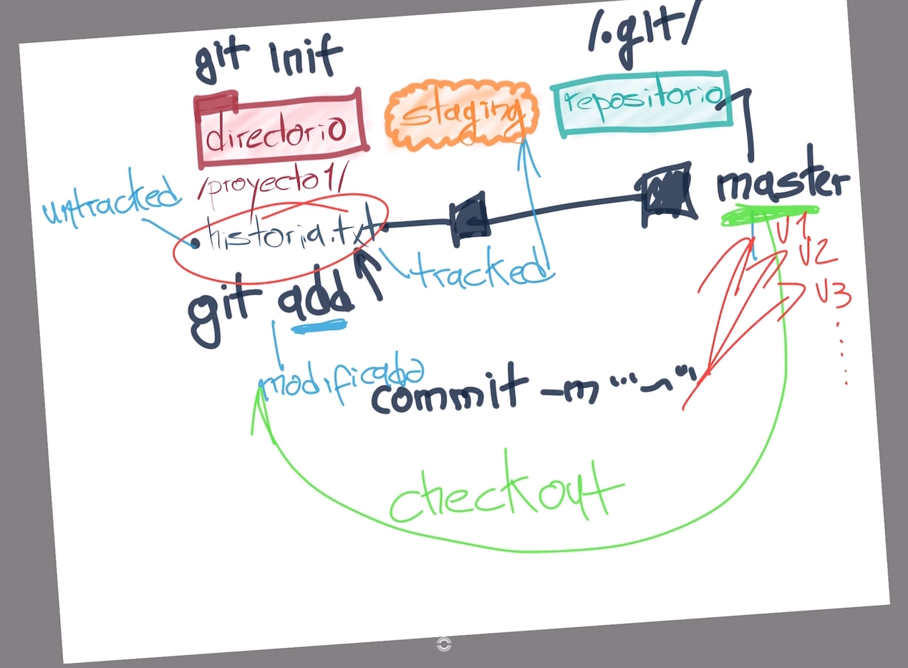

Al aplicar git init se crea el area de staging en memoria ram
Se crea el repositorio ( carpeta .git )
Archivo untracked ->
Agregar archivo al stagin area con git add ->
Archivo tracked
git rm remover un archivo del stagin area
commit -m <mensaje> agregar cambios al repositorio master
-> cambia de tracked en staging a tracked en master
git checkout trae todos los cambios desde el repositorio
